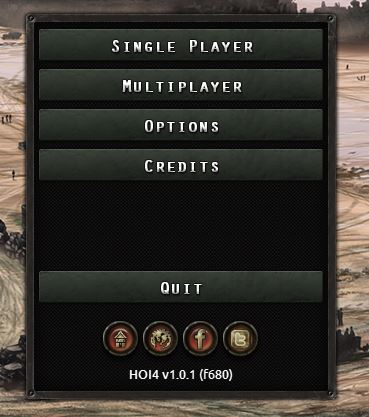
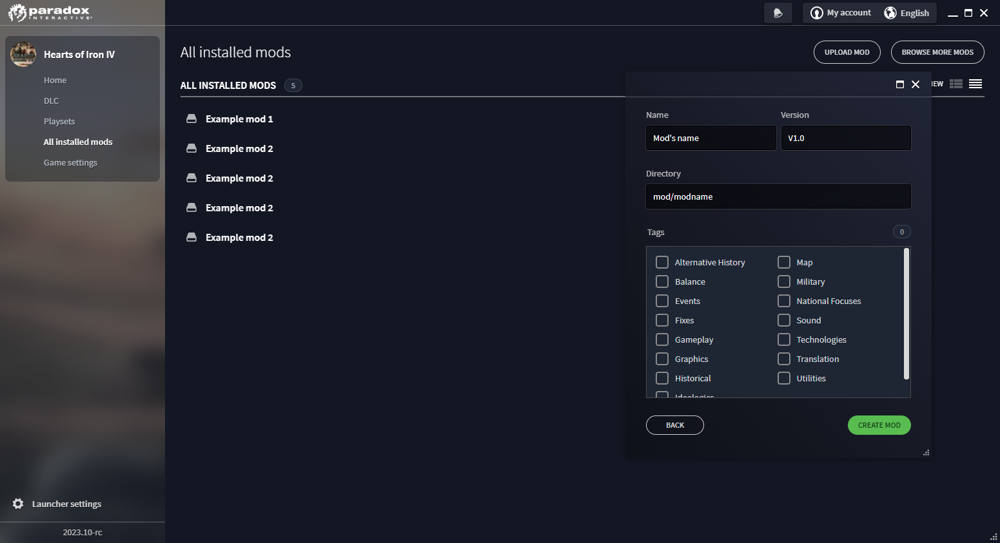

模组制作
原页面：Modding
模组制作，或创建 模组，是指修改基础游戏（常被称为 vanilla）行为的行为，既可用于个人用途，也可公开发布给其他玩家，例如通过 Steam 创意工坊。
与所有 Paradox 游戏一样，钢铁雄心 IV 具有很大程度的可模组性。模组制作者的动机可能千差万别：更好的母语翻译、更多事件或决议、更好的地图、大型改版等等。
模组存放在 mod/ 文件夹中，该文件夹位于 用户目录 内。除了模组之外，游戏还会加载存放在用户目录中的任何文件。游戏内置的地图编辑器微调器（Nudger）会把其输出存放在该文件夹中。包含模组文件的文件夹路径不能含有任何非 ASCII 字符，例如带变音符号的字母或非拉丁文字。
游戏会读取 .mod 文件，也就是 mod/ 文件夹中的任何内容，并且可以通过启动器创建本地模组：「All installed mods」->「Upload mod」->「Create a mod」。它在路径和允许的模组结构选项上有限制，因此可能需要手动编辑输出结果。
模组的名称不能重合，此时只有由用户专属描述文件文件名决定的最先加载的那个模组会在游戏内产生效果。
官方视频指南
Paradox 在 Youtube 上制作的官方模组制作指南。
- 初学者模组制作指南
- 中级模组制作指南
Guidelines
- 绝不要修改游戏文件：即使改动很小也要使用模组，绝不要直接修改 Steam 版 Hearts of Iron 4 文件夹中的游戏文件，因为你的改动可能在毫无预警的情况下被还原。
- 通过添加单独的文件并尽可能从文件夹加载来实现 尽量减少对原版文件的覆盖，以提高模组兼容性和可维护性。（你的文件可以取任何名称，文件夹中的所有文件都会被游戏加载。所以要选一个别人绝不会用的名字，比如你的模组名。例如：coolmod_countries）
- 使用合适的合并工具（例如 WinMerge），用于在文件夹之间合并，并把修改过的原版文件更新到新的原版补丁上。
- 备份你的作品以免失去一切。可考虑使用 Git 之类的版本控制系统，以及 GitHub 或 Gitlab 之类的协作平台来管理团队协作，或者干脆把文件另存一份到别处。通过 GitHub 或 Gitlab 保留版本对调试也非常有用，因为这样可以缩小可能出错文件的范围。
- 《Modding Git Guide》是一份社区制作的指南，介绍如何使用 Git、GitHub/GitLab 以及 KDiff3 等相关工具。对于本 wiki 之外的问题，它可能是个有用的去处，并且为这里谈到的许多内容提供了分步指南。
- 使用 UTF-8 编码 without the byte order mark for text files. This is commonly called "UTF-8", but can sometimes be specified as "UTF-8 without BOM".
- 使用带字节顺序标记的 UTF-8 编码 for localisation files (.yml). This is commonly called "UTF-8-BOM", but can be just "UTF-8", in which case omitting the byte order mark is a separate option. Some text editors, such as Atom, do not support the byte order mark in entirety and should be avoided for localisation.
- 以 # 字符开头的 使用注释，用于记下书写棘手内容的原因。单个井号会让该行其余部分被完全忽略。代码中没有多行注释写法。
- Debug 通过启用 the debug mode 即可有效实现。方法是在 Steam 的启动选项中添加 -debug。启动选项可以在右键点击游戏并选择「Properties..」打开的菜单中找到。另外，在 Windows 中也可以创建 hoi4.exe 或 dowser.exe 文件的快捷方式，然后打开快捷方式的属性，在路径末尾之后追加 -debug（用空格分隔），例如 "C:\Program Files (x86)\Steam\steamapps\common\Hearts of Iron IV\hoi4.exe" -debug。
Text editor
These are the most common text editors to use for modding the game:
- Visual Studio Code（VS Code 编辑器）。
- Has a fan-made CWTools extension with Paradox syntax highlighting, validation and tooltips for triggers and effects. To install it, go to Extensions on the left panel of VS and search for CWTools. (Note: validation rules are incomplete and will show many false errors in gui and localization files).
- Recent versions with automatic highlighting of {} pairs in different colours and flagging opened/closing ones that are missing a partner red is worth it's weight in gold.
- Notepad++。把语言选为 Perl，因为它能提供良好的高亮效果并允许折叠代码块和注释。要将其设为默认，请打开 Settings、Style Configurator，在左侧列表中找到 Perl，并在底部的「User ext.」字段中添加「gui txt」（不含引号）。
- Some options that are commonly turned on by default in other text editors are turned off in Notepad++, but can be changed in the topbar. This includes Word wrap, Document map, Indent guide, and Folder as workspace.
- Sublime Text. There is an extension for it released by the developers of Imperator which could be used with HOI4 but use at your own risk: Sublime Tools. It adds colored highlighting for effects and triggers. If you want to toggle comments in Sublime, you also need to add this file to the same "User" folder.
Reasons to use a non-default text editor include the following:
- 括号与语法高亮。括号高亮让你可以选中一个括号并查看它在哪里打开或闭合，从而知道该块内包含什么，更容易发现缺失或多出的文件。语法高亮通过突出显示更重要的部分让代码更易读，同时还能把注释内部的括号排除在外、不被当作括号处理。
- Searching in multiple files in the same folder. In each provided tool, this is activated with the ^Ctrl + ⇧Shift + F hotkey and can have filename filters in order to limit the files that are searched (e.g.
*.txtwill only search text files, ignoring any other files, such as*.ddsones). - 每一行都在侧面标有行号。由于错误日志通常会指出出错所在的行，这使得定位问题行比 Microsoft Notepad 只能在下方显示当前选中行的行号要快得多。
- Greater capabilities to work with multiple files. Each of these editors may only have one instance of it open at a time with multiple files open at once (switching between them with ^Ctrl + ⇆Tab), in contrast to Microsoft Notepad that opens a separate instance for each opened file, which can quickly fill the Alt + ⇆Tab menu. Multiple instances of the text editor can still be opened, however. A text comparison tool also exists on each one of these: Notepad++ 中的「ComparePlus」对比插件, "Compare Side-By-Side" or "Diffy" package in Sublime Text, or a variety of Visual Studio Code extensions ("Partial Diff" being the most popular one).
- Greater customisation capabilities: each of these text editors allows a wide variety of light or night themes that can be picked as fit, with downloadable themes existing as well. Since one would need to look at the text editor a lot while modding, selecting a theme that looks good to the eyes can make the experience much better.
搜索多个文件
One feature of non-default text editors is a highly-customisable search of all files within the same folder. This is highly useful for dealing with errors and finding locations of certain elements.
Windows 文件资源管理器做这件事是个糟糕的选择, as it only searches inside of .txt files while it may be desirable to search files of other extensions, e.g. .yml, .gfx, .gui, or .asset, and it is very noticeably slower than either text editor: a search taking ~10 seconds on a text editor may take up to 15 minutes to conclude in the Windows File Explorer.
This is how exactly the feature is enabled in the common text editors:
- Notepad++ – This is located in the "Search" topbar menu as "Find in Files...". By default, no folder is provided. "Follow current doc." allows the text editor to automatically input the currently-opened document's folder as the place for the search, or it can be entered manually. Alternatively, this menu can be opened from the right-click menu of a folder within the "Folder as Workspace" menu – accessed by a button in the topbar – which'll automatically set the folder location to be that folder. The ^Ctrl+⇧Shift+F hotkey also opens the menu for this feature by default.
- Sublime Text – This is located in the "Find" topbar menu as "Find in Files...". In order to add a folder to search, the menu to the right of the "Where:" line can be opened, with either "Add Folder" (to select an individual folder) or "Add Open Folders" (To automatically select all folders opened via Sublime Text) buttons serving to do so. The ^Ctrl+⇧Shift+F hotkey also opens the menu for this feature by default.
- Visual Studio Code – Visual Studio Code by default searches only the currently opened folder. A folder is opened either through the "Open Folder..." button in the "File" topbar menu or the "Explorer" menu, accessed through the bar on the left. After this, the functionality can be accessed in the "Edit" menu as "Find in Files". To search in other folders, open the 'search details' menu, represented with an ellipsis, and enter the full path to the folder in the 'Files to include' area. In order to speed up the search, filename filters can be used. For example,
localisation/english/*.ymlwithin "files to include" will only search every *.yml file within the <当前打开的文件夹>/localisation/english/（当前文件夹下的英文本地化目录） folder, where*stands for any amount (including 0) of any characters within the filename. Similar filters can be used in the previous two text editors, however without allowing folders to be filtered — only the filenames. The ^Ctrl+⇧Shift+F hotkey also opens the menu for this feature by default.
A filter on the file extension can be set to speed up the search. This depends on the text editor. Note that * is used to mark any amount of any characters, and this is universal.
- 在 Notepad++ 中，这是通过「filter」菜单完成的。多个过滤器用空格分隔，开头加感叹号表示它是排除过滤器。例如，
*.yml !*french.yml会搜索除法语文件之外的每一个本地化文件。 - In Sublime Text, this is in the 'where' menu. Filters are separated with commas, and a minus sign in the beginning marks it as an exclude filter. For example,
C:\Program Files (x86)\Steam\steamapps\common\Hearts of Iron IV\、*.txt、-GER*（搜索示例：原版目录、所有 txt 文件、以 GER 开头的文件）will search every text file in the base game (Assuming the default location within Windows on Steam) with the exception of those that begin with GER. - 在 Visual Studio Code 中，它位于由「Toggle Search Details」按钮触发的菜单里，该按钮用省略号表示。这个菜单有分开的「Files to include」和「Files to exclude」两项，分别使用。此外，它还允许在这些菜单中表示文件夹名，用双写的
*（如**中那样）来表示任意文件夹名。例如，在「Files to include」中填*.gfx、在「Files to exclude」中填dlc/**，就会搜索所有扩展名为 .gfx 的文件，但 dlc 文件夹中的文件除外。
它有以下几个用途：
- 通过在本地化文件夹中搜索本地化名称来找出内部 ID。例如，搜索某个事件的标题就可以用来确定它的 ID。
- 当某种类型的数据库条目定义在哪里并不直观时找出它的位置。例如，在存放装备的文件夹中搜索某个装备 ID（或者一般来说搜索 /Hearts of Iron IV/common/），可以用来找到确切文件，而这对某些装备类型来说并不那么显而易见。
- A subset of this includes finding sprites' or interface elements' locations: The
guiconsole command (or its main menu equivalent in debug mode) can be used in order to find the name of a certain SpriteType (prefixed with GFX_) or interface element. A search query with the given name within the /Hearts of Iron IV/interface/ folder will provide the file where the sprite is defined (as such, also giving thetexturefilethat says the path of the image in gfx) or the interface folder (which allows copying it to the mod and editing it).
- A subset of this includes finding sprites' or interface elements' locations: The
- 处理未指明位置的难以理解的错误，例如
无效的决议类别，此时可以用它来定位是哪个 which 文件在抛出该错误。 - 找出可能导致某种情况发生的原因，例如什么会触发某个事件，或者什么会设置某个外观标签。
- 同时跨多个文件进行批量替换，通常与正则表达式一起使用。它可以用来自动完成单调重复的任务，例如为每个事件添加一条日志，或者最简单的——修改多个州的拥有者（例如通过 commenting out 原拥有者，并把
owner=替换为owner=XYZ#来插入另一个拥有者）。
Indenting
Another reason to use non-default text editors is greater indenting capabilities. Indenting refers to the usage of newlines and spaces at the beginning of the line, which does not leave an impact on how the code is interpreted, but makes it easier to see the relations between different parts of the code.
Typically, either a tab character (represented as \t) or 4 spaces are used as a single indenting level, placed from the beginning of the line to the beginning of code on the line. In order to increase the indenting level of code, the ⇆Tab button is used in text editors, which can be done on multiple lines at the same time by selecting them. Inversely, ⇧Shift+⇆Tab is used to decrease the indenting level of the line by one.
An additional option present in these editors is 'Indent guide', drawing a line on each indent level in order to make it easier to see the borders of each indent level, which can assist in code capability. While turned on by default in Sublime Text and Visual Studio Code, this must be turned on manually in Notepad++ within the topbar.
以下是缩进常用的约定：
- 文件的第一行缩进为零。
- 一个开括号及其对应的闭括号必须放在缩进层级相同的行上。
- 如果某一行引入了一个未闭合的开括号，那么直到相应闭括号之前的所有内容，都必须比含开括号的那一行多一个缩进层级。
- 一行不应包含同一种括号中的多个。
- 如果某一行包含闭括号却不包含开括号，那么它之前除了缩进不应该有任何其他内容。
以下是正确缩进的示例：
TAG = {
if = {
| limit = { # The bar character "|" is used to visualise the indent guide, rather than being used in-code.
| | has_stability > 0.5
| | has_war_support > 0.5
| }
| country_event = { id = my_event.1 hours = 1 }
}
}
正确的缩进有两大好处：
- 要找出某个参数包含在哪里，只需向左移动一个缩进层级，然后沿缩进参考线追踪，直到碰到代码为止。
- 沿着缩进参考线从含开括号的那一行追踪到它触及闭括号的位置，就能轻松看出一个块内包含哪些内容。
在缩进中需要检查的常见错误有以下几种：
- 不必要地减少了一层缩进。这通常可以通过缩进参考线——从含开括号的那一行画向闭括号的线——出现中断来发现：
ideas = {
country = {
| my_idea_1 = {
| | modifier = {
| | | political_power_gain = 0.1
| | } # closes modifier = { ... }
| my_idea_2 = { # Interrupts the line from my_idea_1 to the closing bracket, so is erroneous
| } # Doesn't work due to being located inside my_idea_1
}
}
characters = {
my_character = {
| name = character_name
|
portraits = { # Erroneous
| civilian = {
| | large = GFX_my_sprite
| }
} # closes portraits = { ... }
my_character_2 = { # Doesn't work due to being inside another character
| <...>
}
}
- 把闭括号放在与前面脚本相同的层级上：
if = {
limit = {
my_scripted_trigger = yes
}
} # Closes the if statement, and so should've been one more level to the left to match the if statement's indent level.
my_scripted_effect = yes # Always executed due to being outside of the if statement.
}
country_event = {
id = my_event.1
option = {
name = my_event.1.a
} # Closes option = { ... }
} # Closes country_event = { ... }
option = { # Does not work due to being defined outside of an event.
<...>
- 在未闭合的开括号之后没有增加缩进层级：
my_technology_1 = {
enable_building = {
building = industrial_complex
level = 20
} # Closes enable_building
my_technology_2 = { # Inside of my_technology_1 = { ... }, doesn't work.
...
}
- 把相邻的行放在相差至少 2 个缩进层级的位置：
focus = {
<...>
completion_reward = {
TAG = {
country_event = my_event.1
} # Closes TAG = { ... }
} # Closes completion_reward = { ... }
focus = { # Does not work due to being contained within another focus = { ... }
<...>
}
遵循缩进规则并检查这些缩进错误，就能确保代码中不会出现与括号相关的错误。
通用模组制作概念
如果使用 Windows，请 强烈建议关闭 Windows 文件资源管理器的隐藏文件扩展名功能。文件扩展名被视为文件名的一部分，隐藏它们可能导致文件因文件名错误而无法工作（例如不小心把本地化文件保存为 .txt 文件、以错误格式保存图像却没有察觉等等）。
用户目录
用户目录用于存放与《钢铁雄心 IV》相关、并非内置于游戏中而是由用户创建的信息。位置由 gameDataPath 在基础游戏的 /Hearts of Iron IV/launcher-settings.json 中决定。默认情况下，《钢铁雄心 IV》的用户目录位于以下文件夹中：
- Windows：
C:\Users\<用户名>\Documents\Paradox Interactive\Hearts of Iron IV\（默认用户目录）或C:\Users\<用户名>\OneDrive\<Documents（系统语言中的名称）>\Paradox Interactive\Hearts of Iron IV\（OneDrive 下的用户目录） - Mac OS:
~/Documents/Paradox Interactive/Hearts of Iron IV/ - Linux:
~/.local/share/Paradox Interactive/Hearts of Iron IV/
具体而言，以下是用户目录中值得注意的内容：
- 用户专属模组描述文件位于 /Hearts of Iron IV/mod/ 文件夹内。它用于赋予模组信息，例如包含模组的文件夹路径。同一个文件夹也包含本地模组在启动器中创建后的默认位置，不过也可以使用任何文件夹。
- nudger 的输出存放在该文件夹中。具体而言，用户可以把 /Hearts of Iron IV/map/、/Hearts of Iron IV/history/states/ 和 /Hearts of Iron IV/localisation/ 作为微调器的输出创建出来。从这里开始，它们会在游戏打开时被加载进游戏，优先级高于基础游戏的文件。
- 游戏的日志在 /Hearts of Iron IV/logs/ 中创建。在那里，它们可用于 troubleshooting 或获取有用信息。另见 § 日志。
- 存档文件存放在 /Hearts of Iron IV/save games/ 中。
- 游戏的截图存放在 /Hearts of Iron IV/screenshots/ 中。这既包括普通的 F11 截图，也包括用 F10 生成的地图，后者是整个世界地图的像素级精确呈现，采用 /Hearts of Iron IV/map/provinces.bmp 中的省份边界。
- /Hearts of Iron IV/settings.txt is modified by the game's settings menu and includes some that aren't possible to change there. In particular,
save_as_binary=noisn't possible to change anywhere else, and so is changing the default text editor used by the game.
如果用户目录的路径中包含非 ASCII 字符，它可能无法按预期工作。尤其是游戏将无法打开 error.log（但仍会修改它）或存放在那里的模组。要绕开这一点，可以只把模组移到别的文件夹，方法是在 path 中修改 用户专属描述文件；也可以把整个用户目录移走，方法是编辑 /Hearts of Iron IV/launcher-settings.json 并相应移动文件。
加载文件
After creating a mod folder within the launcher, every single file within will get loaded at the same location as in base game. Taking a mod with the name of "yourmod" as an example, every single file within mod/yourmod/common/national_focus will get loaded alongside files in base game's /Hearts of Iron IV/common/national_focus assuming the default path. However, inserting one more folder as in mod/yourmod/test/common/national_focus will result in the files in that folder not being loaded as national focus files, appearing to get ignored.
The root folder of the mod, considered the same as the /Hearts of Iron IV/ folder in the base game, will be defined in the user directory's /Hearts of Iron IV/mod/yourmod.mod file, opened with a text editor. This is set via path = "" in that file, by default being user directory's /Hearts of Iron IV/mod/yourmod.
基础游戏最先加载，模组稍后加载。文件加载顺序主要用于决定两件事：
- 对于同一位置同名文件的情况，加载顺序决定使用哪一个。例如，如果某个模组和基础游戏都编辑了 ../events/Generic.txt，游戏会读取模组的版本。这只适用于单个文件，不适用于整个文件夹。同一位置多个同名文件不可能都被加载：游戏只会选取较晚加载的那个，而忽略较早的那些。
- 如果在模组描述文件中使用了 replace_path，则由加载顺序决定指定文件夹内的哪些文件会被卸载。
除了 replace_path 之外，没有办法完全卸载一个文件，不过如果有同名文件，它可以被覆盖。[a] 例如，如果模组中唯一的文件是 ../common/national_focus/generic.txt，那么它只会覆盖基础游戏的通用国策树，其他国策树仍与基础游戏中一样。如果另一个模组只编辑了一棵不同的国策树（例如新增一个 malta.txt），那么游戏会读取对通用国策树的修改、读取 malta.txt，其余部分保持与基础游戏一致。
游戏中的加载顺序如下：
- 基础游戏。由于在加载顺序中最早，它发生重叠时优先级最低。
- DLC，按其内部 ID 的顺序（与发行日期一致）。例如，如果基础游戏、DLC018 和 DLC20 都包含 ../interface/frontendmainviewbg.gfx，游戏只会读取 DLC020 中的版本，忽略其余版本。由于校验和的限制，DLC 文件夹通常只包含与该 DLC 相关的图形和音频，而代码始终保留在基础游戏本体中，被 has_dlc check 锁定。
- 用户目录。虽然通常只限于 nudger 的输出，但其他任何文件夹在这里也同样可行。
- 模组，使用 filenames of user-specific descriptors 排序。例如，如果描述文件为 mod/abc_mod.mod 和 mod/xyz_mod.mod 的两个模组都覆盖了 ../events/my_events.txt，那么只有描述文件为 mod/xyz_mod.mod 的那个模组中的版本会被读取。
- 这可以通过用
dependencies = { ... }在 descriptor contents 中来覆盖。replace_path does not change the order，但它用于完全卸载先前从某个文件夹加载的一切内容。
由于 DLC 是各自独立的已加载文件来源，modname/dlc/ 文件夹及其子文件夹不会产生任何效果。文件必须遵循实际的加载位置：例如要编辑 ../dlc/dlc023_man_the_guns/music/mtg_music.txt，模组中就必须包含 modname/music/mtg_music.txt。
During the process of loading, the files remain as pure text and do not immediately get interpreted. Exceptions for this are files that are necessary for the loading screen to work and localisation. Afterwards, there's the process of interpretation/evaluation, which reads the text files and creates content (such as national focuses, countries, or states) accordingly. 文件名不影响文件的解释方式 with few exceptions.[b] For vast majority of files, they're either read only by the virtue of being within a specific folder (Such as national focuses), or by a direct link within a different file (Such as oob = "TAG_1936" within a 国家历史文件 loading the /Hearts of Iron IV/history/units/TAG_1936.txt file for unit locations). This allows avoiding overwriting base game files in many cases, which eases making the mod's contents be compatible to the next major update.
对于绝大多数文件夹，例如 /Hearts of Iron IV/interface/*.gfx 文件，解释时会使用 ASCII 字符 ID 按文件名排序。这与文件资源管理器使用的字母排序不同，因为大写字母被视为排在小写字母之前，而且中间还夹着多个字符（例如下划线）。为了让某个文件在求值顺序中特别靠前，可以使用靠后的字符 ID 作为前缀，例如 zz_；反过来则相反，基础游戏常用 00_ 来实现。
加载顺序在求值期间无关紧要：如果不同文件的条目之间存在重叠，游戏通常使用求值顺序来决定哪一个优先。例如，如果基础游戏在 123-ABC.txt 中有一个 ID 为 123 的州，而模组在 123-XYZ.txt 这个文件中包含州 123 的信息，游戏会优先采用先创建的州，也就是基础游戏的定义。反过来说，在基础游戏的 321-WWW.txt 与模组文件中的 321-DEF.txt 之间，则会选用模组的 321-DEF.txt。重复条目的具体处理方式取决于具体文件：有些文件处理得不好，应当避免（例如国策重复会破坏前置条件连线的生成），有些优先采用最先创建的条目，有些则优先采用最后创建的条目。
改变解释顺序的用途非常有限，但它确实存在。一些值得注意的情况包括：
- /Hearts of Iron IV/interface/*.gfx 文件会创建精灵，为图像赋予信息，例如附加一个单独的名称。如果同一个精灵有多个定义，只有较晚求值的精灵会被使用，较早的那个会被忽略。基础游戏特别将其用于 DLC：如果某个角色只在某个 DLC 中有立绘，那么他们会被设为使用某个精灵作为立绘。在基础游戏中，该精灵被设为指向通用立绘，否则该角色可能会显示异常，这在多人游戏中是可能发生的。然而在 DLC 文件中，用于立绘的精灵会在求值顺序更靠后的另一个文件中再次定义，以确保 DLC 拥有者会使用 DLC 添加的立绘。
- /Hearts of Iron IV/common/country_tags/*.txt 文件：国家标签的定义顺序很重要。虽然基础游戏在此处主要按文件内部的顺序安排求值顺序，但它仍然有意义。它决定的事情包括：/Hearts of Iron IV/history/countries/ 文件的求值顺序（否则可能导致附庸国的支持率出现异常）、事件/决议/焦点等的求值顺序（无论是触发它们的触发器还是 AI 选择它们），以及某个作用域选定多个国家时的顺序：既包括求值顺序，也包括提示框中的顺序。

校验和，即在主菜单中版本号旁边可见的 4 位字母数字代码，例如 a2b4，决定多人游戏和成就兼容性：只有当校验和与主机一致时才能加入服务器，而只有当校验和与基础游戏一致时才会启用成就，基础游戏的校验和可在启动器中查看。会改变它的内容清单可在基础游戏的 /Hearts of Iron IV/checksum_manifest.txt 文件中看到，其中包含整个 common/、events/ 和 history/ 文件夹，以及 map/ 文件夹的大部分内容（map/terrain/ 除外）。对该文件夹中文件的任何改动都会改变校验和，而不改动它们的模组则不会。
文件夹结构
以下是模组中常被编辑的文件夹：
- /Hearts of Iron IV/common/：这是最主要的文件夹，几乎所有数据库条目都在其中定义：国家、科技、焦点等等。
- /Hearts of Iron IV/events/：定义 事件 的文件夹。
- /Hearts of Iron IV/history/：该文件夹主要决定起始的历史信息：哪些州由哪些国家拥有、起始的政治与外交局势、军队位置、起始建筑等等。通常，任何在国家被选中之前发生的事情都由这里决定。不过，起始铁路和补给节点反而定义在 /Hearts of Iron IV/map/ 文件夹中。
- /Hearts of Iron IV/map/：该文件夹用于编辑地图的外观，例如省份、显示的地形、高度图等等。它还包括战略区域以及起始的补给节点和铁路。不过，州的边界反而定义在 /Hearts of Iron IV/history/states/ 文件夹中。
- /Hearts of Iron IV/localisation/: This folder is used to define how the text is shown, depending on the currently turned-on language.
- /Hearts of Iron IV/gfx/：该文件夹用于存放图像。不过大多数情况下 这些图像不会被自动加载，必须在精灵中链接它们。经常被编辑的例外包括 /Hearts of Iron IV/gfx/loadingscreens（其中每一个文件都会被加载）、/Hearts of Iron IV/gfx/flags 及其子文件夹（国家在意识形态或外观标签改变时会尝试加载旗帜），以及 /Hearts of Iron IV/gfx/interface/equipmentdesigner/graphic_db/*.txt 文件（为装备设计器中显示的图像池指派精灵）。其他所有内容都需要精灵。
- /Hearts of Iron IV/interface/ (not to be confused with /Hearts of Iron IV/gfx/interface/): This folder is mostly filled with
*.gfx和*.guifiles, both of which can be opened in a text editor. The former define the graphical entries that are shown in-game: sprites that assign a name and properties (such as animation, the amount of frames, or loading type) to an image file, fonts, text colours, map arrows, et cetera. The latter define the graphical user interface itself: how the buttons and icons are laid out, which GFX is used where, where to write text, et cetera. This only decides on the appearance of the GUI, the attributes such as effects have to be defined elsewhere. - /Hearts of Iron IV/music/：该文件夹用于定义在广播电台中播放的歌曲，以及加权随机播放中的可能性。
- /Hearts of Iron IV/sound/：该文件夹用于定义在其他地方播放的声音，通常与 GUI 的某个元素绑定。它还包括诸如师语音台词之类的条目。
- /Hearts of Iron IV/portraits/：该文件夹用于为随机生成的通用角色指派立绘精灵。
代码结构
构建代码所用的脚本语言始终具有共同结构：<attribute> = <argument>（在触发器的情况下有时使用不等号），例如 add_political_power = 100，只有少数例外可以省略参数。每个属性和参数都是一个单词（单词字符包含 [a-zA-Z0-9_.,\-/] 组），以空白字符作为分隔符。不过有两类参数可能包含不止一个单词：
- 字符串两侧用引号标记（只用
"）。空格不会中断字符串，但直接换行会。如果内部没有任何空白字符，省略引号不会改变结果（例如date > "1936.1.1"和date > 1936.1.1）。字符串中允许使用两个特殊字符：\"用于写入引号，\\用于写入反斜杠，反斜杠不得以任何其他方式使用。无法在字符串内部直接包含换行。有时属性本身也会被引号包起来，例如"TAG" = { has_political_power > 100 }。字符串最多可包含 255 个字符，不包括终止空字符。
- Where text is intended to be displayed to the player, such as tooltips, attributes generally accept a localisation key as the argument. This allows the shown text to change depending on the enabled language and contains more capabilities, such as not being bound to 255 characters or capabilities for text customisation (e.g. coloured text, newlines, or dynamic changes). If the game detects no defined localisation key in the enabled language's database, it will default to directly displaying the argument.
- 在某些类型的属性中，使用花括号把整块代码作为参数附加进去，该参数通常由具有相同
<attribute> = <argument>格式的其他代码组成。举例来说，random_country = { add_stability = 0.1 }（作为 effect）是random_country的一个属性，其参数为{ add_stability = 0.1 }；该参数本身又由add_stability的一个属性组成，其参数为0.1。具体而言，这会进入一个随机存在的国家的作用域，并增加 10% 稳定度。
如果该属性不支持把多个属性归组在一起，那么使用开括号会被解释为参数本身。例如，游戏会把 transfer_state = { 123 321 } 解释为试图转移 ID 为 { 的州。之后游戏遇到 123，它会被解释为 scoping into a state，并会被那个闭括号提前中断。结果就多出了一个没有对应开括号的闭括号，这很可能导致作用域错误，破坏文件其余部分。
省略参数/等号几乎总是错误的。例如，在期望效果或 触发器 的地方它始终是必需的，因此这样写是错误的：GER = { leave_faction }。相反，在不期望参数的地方，通常用 yes 作为 GER = { leave_faction = yes }。只有少数例外应当省略参数，例如在 the expanded form of add_ideas 内部。
注释用 # 字符标记：该字符之后直到换行之前的所有内容都会被游戏完全忽略。例如：
completion_reward = {
add_political_power = 100 #TODO: Check if balanced
}
不存在多行注释块。
Aside from comments and strings, newlines are treated entirely identically to spaces as delimiter characters. As a result, indenting does not matter: most files can be done on one line in total without any change in how they get interpreted. However, doing indenting properly can make detecting bracket problems much easier without using a text editor's bracket highlighting and overall makes it easier to see at a glance what each block includes within of itself and what it doesn't.
This also means that an attribute's argument should never be left empty, as it'll interpret the next attribute as the argument instead. For example:
focus = {
id = TAG_focusname
icon =
x = 2 # Will not work in-game.
}在这种情况下，焦点的图标属性被设为 icon = x，接下来游戏完全不知道该如何解释 = 2。实际上，这会导致该焦点不出现在预期的位置。
以下几类参数块特别常见：
- 效果用于焦点完成奖励、事件选项、决议效果、on actions、国家历史文件等场合。它们用于对游戏状态实施一次性的改变。
- 触发器 用于焦点和决议可用性检查、事件触发器或 if statements 等场合。它们返回严格的布尔值 true 或 false，而不会实际改变游戏状态的任何内容。
- 作用域 是触发器和效果中的一个特殊子集，可用于改变效果为哪个国家/州/角色/师执行，或为哪个对象检查触发器。
- 修正项 用于施加恒定的数值变化，例如每日政治点数获取。通常使用 ideas such as spirits 把它施加到国家上。
The order in which attributes are placed may matter or not depending on the context. In particular, these are the general rules:
- 效果和触发器的顺序最重要：它们按放置顺序执行，这也决定了它们在玩家所见提示框中的排列顺序。例如，如果一个效果块先包含
annex_country，然后包含检查被吞并国家是否拥有某个州的 an if statement，那么该 if 语句将永远为假，因为该国已被吞并。在触发器中，执行顺序对临时变量有影响。 - 修正的顺序完全无关紧要，它们在提示框中的顺序是硬编码的。[d]
- 同一入口不同属性之间的顺序不会改变解释结果。例如，如果某个国策的奖励被定义在其位置之前，而不是通常的反过来，也不会被区别对待。
- 对于同一类型的数据库条目，它们在文件中的位置决定了其创建顺序。玩家最容易察觉这种顺序的例子包括决议（除非用
priority覆盖）、建筑和意识形态。- 这种创建顺序在其他引用中也可能有意义。例如在 装备 中，装备类型必须被指派一个已存在的原型。如果在装备类型创建时该原型尚不存在，游戏会直接崩溃到桌面，即使文件后面有该原型定义也一样。
- 在适用的情况下使用 the filename is primarily used for evaluation，文件内部的顺序则是次要的。由于这里使用 ASCII 顺序，以
00_开头的文件名通常用于确保它被安排在接近开头处求值，而以zz_开头则用于相反的情形。
- 对于数据库条目中同一类型的属性，解释方式各不相同。如果支持多个，代码中的位置决定顺序（例如，国策中的每一个
prerequisite = { ... }都必须满足才能完成该焦点，或者事件中的每一个immediate = { ... }都会在事件触发时执行）。否则，它可能会选取该属性最早或最晚的定义，而忽略其他定义（例如在脚本化本地化中，会使用第一个触发器得到满足的有效text = { ... }）。
同一个属性被故意用不同参数重复书写是很常见的。重复属性的处理方式各不相同，而且并非处处都有意如此。例如，国策树内部的每一个 focus = { ... } 都会被当作一个独立的国策。通常如果效果块被重复（例如某个事件的 immediate = { ... }），每一个都会按放置顺序执行。有时属性的名称是任意的。例如在 理念 中，每一个理念（放置在某个理念类别内）的属性名都会被当作该理念的名称。
调试模式
调试模式通过 -debug 启动选项激活。具体而言，有两种应用它的方式：
- 游戏的 Steam 属性中包含启动选项。在已拥有游戏列表中右键点击该游戏条目会弹出一个菜单。菜单底部是「Properties...」，点击后会显示一个单独的窗口。「General」部分（默认打开）的底部就是启动选项。每个启动选项之间用空格分隔输入，例如
-checksum -debug - 在 Windows 中，可以通过游戏目录里 hoi4.exe 或 dowser.exe 文件的快捷方式来应用启动选项。创建快捷方式后，右键点击它并进入属性，就会打开快捷方式的属性菜单。在属性的「Shortcut」部分（默认打开）中，「Target」部分包含文件的路径。启动选项插入在文件名之后那个右引号的后面。引号与启动选项开头之间必须至少有一个空格，后续的启动选项也用空格分隔。一个「target」部分的示例如 "C:\Program Files (x86)\Steam\steamapps\common\Hearts of Iron IV\hoi4.exe" -debug -start_tag=ALB。
调试模式对模组制作非常有用，会带来以下好处：
- 自动加载——在模组文件夹内对文件所做的修改无需使用「reload」控制台指令即可在游戏中生效。这还会自动把文件中的错误加入错误日志。这只对游戏启动时已经存在的文件生效，但有一个例外：如果某个文件的直接路径在模组中的其他地方被提到，那么它仍会因那种特定用途而被加载。这方面的例子包括 orders of battle，因为 load_oob = "TAG_my_oob" 相当于指向 /Hearts of Iron IV/history/units/TAG_my_oob.txt 的直接链接；或者 GFX，因为 sprites 直接引用了图像的位置。不过要注意，游戏内加载图像时不会正确解压它们，导致可见的变形或黑色背景，重启后即可恢复。虽然对大多数文件的修改都能生效，但对 /Hearts of Iron IV/history/countries/、/Hearts of Iron IV/history/states/ 和 /Hearts of Iron IV/map/ 不起作用，不过后两者可以部分使用微调器（nudge）。
- 不出现地图定义崩溃——如果编辑了地图，就有可能出现错误。任何与地图相关的错误都会在加载时使游戏崩溃，并提示「Some errors are present in the map defition[sic] and have been logged to error.log」。如果开启了调试模式，游戏会继续正常加载。当错误日志中出现任何包含 MAP_ERROR 的错误时，就说明存在地图定义错误 after loading into a country，因为在主菜单加载期间调试启动选项打开日志时，某些地图错误还没有被记录。[c]
- 扩展错误日志——某些错误除非开启调试模式，否则不会被记录到日志中。一个例子就是上面提到的地图定义错误，因为游戏在有机会记录它们之前就崩溃了。启用调试模式可确保所有能记录到错误日志中的错误都会被记录下来。
- 便于打开错误日志——只要日志中存在任何错误，加载游戏时或选择国家后日志就会自动打开。载入某个国家后，也可以点击右下角的错误狗来访问日志，每当日志中出现新错误时它都会出现（因为文件会被自动加载）。如果在展开
gameDataPath后的 /Hearts of Iron IV/launcher-settings.json 中得到的用户目录完整路径包含任何非 ASCII 字符，例如非拉丁文字或变音符号，那么日志将无法打开，并提示「The system cannot find the path specified」，可以通过更改游戏数据所用的文件夹（必要时移动文件）来解决。 - 便于使用微调器——开启调试模式后，主菜单中会出现打开微调器（nudge）的选项。这有助于节省时间，或者在尝试载入某个国家时游戏崩溃的情况下仍能打开微调器（如果 /Hearts of Iron IV/tutorial/tutorial.txt 文件引用了无效的州、如果该文件即使不含任何内容也没有至少一个
tutorial = {}、如果 补给节点和铁路没有正确设置，或者由于其他原因，都可能发生这种情况）。 - 主菜单中的图形界面信息——只要开启调试模式，在主菜单中按下 ` 键（通常位于 QWERTY 键盘左上角，默认用于打开控制台）就会提供所用图形界面的信息，给出元素名称、它们的位置以及它们使用的精灵。这相当于使用「gui」控制台指令，但调试模式让这一操作可以在主菜单中完成。
- 扩展信息——开启调试模式后，将鼠标悬停在省份上会显示额外信息，包括该省份及其所属州的 ID、所有者与控制者的标签等等。在国家政治/外交视图中将鼠标悬停在其旗帜上时，也会为整个国家显示这类调试信息，例如标签、原始标签（用于动态国家）以及外观标签。
- 可使用更多控制台指令——某些控制台指令仅限开发者使用，而调试模式允许玩家使用它们。不过要注意，并非所有控制台指令都会变为可用。
- 便于访问 GUI 文件——将鼠标悬停在某个 GUI 元素上时，可以用 Ctrl+Alt+鼠标右键点击 打开调试菜单，从而跳转到定义该元素的 GUI 文件。
- 和平协议时自动保存——每次召开和平会议时，开启调试的游戏都会自动创建一个存档文件。
如果使用了「debug」控制台指令，就可以使用 only the last 4 advantages。如果通过 launch options 开启调试，无论是 -debug 还是 -crash_data_log（不会启用自动加载），所有好处都会获得。不过多人游戏将被禁用，并且与不开启相比游戏性能会下降。
Logs
日志位于 用户目录 的 /Hearts of Iron IV/logs/ 文件夹中，可用于 troubleshooting 游戏。尤其是在处理意外行为时，它们特别有用：
text.log用于处理 本地化 值的重复定义。game.log是在游戏运行过程中记录的信息。尤其是，「log」（无论是作为 effect 还是 trigger）会把它的日志输出到这个文件中。error.log记录的是游戏开发者预见到的、在模组制作时可能出现的潜在错误。因此，它通常不包含导致崩溃的错误，而是详细记录潜在的意外行为。不过，它对 troubleshooting 崩溃无论如何都有用，因为那种意外行为有时会导致崩溃（例如「invalid event target」错误可能导致一个不受控的州被转移，从而引发崩溃）。每一个标记为 MAP_ERROR 的错误都需要开启调试模式才会出现，否则游戏将无法打开。[c] 部分 MAP_ERROR 错误只有在选择国家并开始游玩之后才会出现。system.log详细记录了系统生成的信息，通常与图形有关。使用-checksum启动选项时，它还会生成校验和的输出，可以与其他用户的校验和进行比较，从而找出差异究竟在哪里。
本地化文件
- 主条目：本地化文件
Names depending on language are defined within 本地化. Taking only the English language into consideration, the /Hearts of Iron IV/localisation/english folder is used. A file within must end with _l_english.yml in the filename to work properly, including the extension that is hidden by default within the Windows File Explorer. The file must be encoded in the UTF-8 encoding with the byte-order mark included, usually called UTF-8-BOM. The exact details on conversion depend on the text editor. The first line in the file is l_english: to assign it to that database.
一条本地化条目的结构为 localisation_key:0 "键的值"。其中冒号之前的第一部分称为本地化键，引号中的结尾部分称为该本地化键的值，中间的数字是版本号。版本号纯粹是注释，游戏不会读取，完全可以省略。任何本地化文件都可以用于任何本地化，而且最好使用新文件，而不是直接复制覆盖基础游戏的文件。虽然在许多情况下理论上可以避免使用本地化，但本地化相比直接使用字符串有若干优势：
- Text customisation support. This necessarily includes newlines and coloured text, which never work inside of strings. In some cases, dynamic localisation as marked with square brackets as e.g.
[TAG.GetName]will work with localisation, but not in strings. - 多语言支持。即使模组只打算使用英语或另一种语言，最好也保留这个选项，以便将来可能出现的子模组使用。虽然对不使用本地化的模组制作翻译子模组仍然可行，但要保持其同步更新会困难得多（因为这种情况下需要修改的不只是本地化文件），而且会改变校验和（导致装了翻译子模组的玩家与没装的玩家之间无法进行多人游戏）。
- Strings have a character limit of at most 255 visible characters, making it impractical to use them on large chunks of text such as descriptions.
- 非 ASCII 字符，例如元音变音和其他变音符号，在多个文件中不被字符串支持，例如国家领袖特质或相邻规则。非 ASCII 支持通常以文件带有字节顺序标记（通常记为一种单独的编码 UTF-8-BOM）为标志，如果文件并非直接支持却带有该标记，会导致游戏加载该文件失败。
GFX
大多数情况下，图像以 DDS 格式存储，通常是不含 mipmap 的 ARGB8（视图像编辑器不同也可能是 A8R8G8B8）。不过确切格式并不严格要求：大多数图像文件都可以保存为 DDS、TGA、PNG 或 BMP，只要精灵中的信息正确即可。主要的例外包括 flags representing countries，它必须是 32 位 TGA 文件，不能使用 RLE 编码，且原点在左下角，另外还有 map 文件夹中的文件。
A sprite is used to add extra information to an image file (such as a sprite's name, loading type, the amount of frames, or animation), and are required for an image to be shown in the graphical user interface. Sprites are defined in the /Hearts of Iron IV/interface/*.gfx files opened with a text editor. Note that the folder is not related to /Hearts of Iron IV/gfx/interface/.
精灵定义在 spriteTypes = { ... } 块中，并有多种不同的定义，例如简单的 spriteType、可用于任意尺寸并在拉伸时考虑四角的 corneredTileSpriteType、一个 frameAnimatedSpriteType，它允许创建动画序列，而不局限于只能在 spriteType 中完成的脚本化动画，等等。最简单的精灵文件由以下内容组成：
spriteTypes = {
spriteType = {
name = GFX_my_sprite_name
texturefile = gfx/interface/folder/filename.dds # Must use / for folder separation
}
spriteType = {
name = GFX_my_second_sprite
texturefile = gfx/anotherfolder/filename.dds
}
}
这会把 /Hearts of Iron IV/gfx/interface/folder/filename.dds 文件指派为在游戏中使用 GFX_my_sprite_name 精灵。该精灵随后可用于图形用户界面，例如决议或焦点图标（注意，焦点图标还必须为闪光动画单独准备一个精灵）。唯一在界面文件中没有任何定义的图像是：
- /Hearts of Iron IV/gfx/flags/ 及其子文件夹中用于国家的旗帜。
- /Hearts of Iron IV/gfx/loadingscreens/ 中的加载界面。不过要注意，通常存放在该文件夹中的主菜单背景 is 被定义为精灵。
- 角色立绘。它们 may 使用精灵作为定义，但它们是游戏中唯一不把这一点作为强制要求的地方，允许改为直接链接到文件。
还有一些可能与精灵相关的潜在错误：
- 精灵完全透明：这表明精灵存在，但其中的图像无法被加载。当
texturefile被定义到一个不存在的文件（文件夹路径或文件名可能与文件本身不对应），或者图像本身已损坏时，就会出现这种情况。这通常会伴随一个Texture Handler encountered missing texture file错误。 - 精灵被替换为默认图像：这表明问题出在精灵本身而不是图像上：游戏在某处链接到了不存在的精灵。这通常是精灵名称中有拼写错误，或者没有遵循命名格式（例如在 国策图标的闪光精灵 末尾漏掉了 _shine）。请确保该精灵存在且名称正确。[e]
- 角色使用随机生成的立绘：这表明出现了上述两个问题之一：立绘精灵无效或文件缺失的角色，其立绘会被随机化。
模组结构
每个模组都关联着两个扩展名为 .mod 的描述文件：
- 用户专属描述文件，用于赋予加载模组所需的信息。尤其是存储模组的文件夹路径只能在这里定义，因为它可能因用户而异。它们存放在用户目录的 /Hearts of Iron IV/mod/ 文件夹中，文件名决定它们的加载顺序（除非被依赖关系覆盖）。文件名中不能包含空格。例如 /Hearts of Iron IV/mod/ugc_1234567890.mod 或 /Hearts of Iron IV/mod/modname.mod 都是用户专属描述文件。
- 模组专属描述文件，用于赋予该模组所拥有的、无论用户是谁都应共享的信息。该文件必须命名为
descriptor.mod，并位于路径所指向的主文件夹内，也就是上面文件中 path 所指定的那个文件夹。例如 /Hearts of Iron IV/mod/my mod/descriptor.mod 或 ../steam/steamapps/workshop/content/394360/1234567890/descriptor.mod 都是模组专属描述文件。
这两个描述文件本应包含大体相同的信息，只是只有用户专属文件才应在其定义中包含 path 条目，因为它不在不同用户之间共享，且可能有很大差异。对于可以在启动器中定义的参数，启动器会强制这一点，但诸如 replace_path 之类的其他参数不会被自动迁移过去。

可以用启动器创建一对描述文件：通过「All installed mods」->「Upload mod」->「Create a mod」进入的菜单就是用于此目的的。它不允许自由选择用作模组文件夹的位置，也不提供模组描述文件中可以包含的全部参数，因此可能需要在输出结果中手动编辑描述文件，以添加其他模组属性或更改文件夹位置。
此外，在加载模组时也会使用用户目录中的这些文件：
- /Hearts of Iron IV/dlc_load.json 在打开游戏时提供已启用模组的列表（形式为 .mod 文件缩写路径的列表，如
"mod/modname.mod"中那样）以及已禁用的 DLC 列表。虽然启动器会在游戏启动前自动修改它，但它让你无需使用启动器就能开关不同的模组。如果存在多个enabled_mods定义，游戏会使用最先定义的那个，从而无需启动器即可实现多套游玩列表。 - /Hearts of Iron IV/launcher-v2.sqlite 或 /Hearts of Iron IV/launcher-v2_openbeta.sqlite 是一个 SQLite 数据库，用于在启动器中生成模组信息和游玩组合。启动器有时会无法更新已有的模组（例如，即使路径已修正，「invalid path」错误仍可能永久存在，或者新的用户专属模组描述文件无法被检测到），删除该文件可以重新生成游玩组合。文件删除后，游戏会读取每一个用户专属模组描述文件，并据此重建模组列表。托管在 Steam 创意工坊和 Paradox Mods 上的模组会被自动加入默认游玩组合；本地模组会保留在「All installed mods」列表中，但默认不会被分配到任何游玩组合。
描述文件内容
大多数 .mod 文件都包含与此类似的内容，这些内容可以在启动器中设置：
name = "Average mod"
path = "mod/modname"
picture = "thumbnail.png"
version = "v1"
supported_version = "1.13.*"
tags={
"Gameplay"
"Historical"
}
remote_file_id="1678247250"
有以下这些参数：
name是模组的名称，即在启动器中显示的名称。它也会被用在模组的dependencies属性中。该名称相对于其他已安装的模组必须是唯一的。path用于定义模组文件夹的位置。对于本地模组，填入path = "mod/modname/作为缩写位置后，启动器打开时会自动在前面补上用户目录的位置。任何文件夹都可以用来存放模组，不过 路径中只能使用 ASCII 字符。如果路径包含非 ASCII 字符，例如变音符号或非拉丁文字，模组将加载失败。文件夹分隔符严格使用正斜杠「/」。它只应出现在用户专属文件中。picture是指派给该模组的图片文件名。它会为 Steam 和 Paradox 类型的模组显示在启动器中，也会作为 Steam 创意工坊和 Paradox Mods 中的缩略图。该图像必须位于模组的根目录内（通过path定义），且大小必须小于 1MB。它必须定义在模组名称之后。即使定义了它也 本地模组在启动器中不会有配图。version是一个字符串，会作为模组版本显示在启动器中模组名称的旁边。任何字符串都被接受，且不会带来任何改变。supported_version用于确定该模组面向哪个游戏版本，否则会在启动器中显示「out of date」标记。版本号的最后一位数字可以替换为星号，表示该模组可在该大版本内的任何小更新上工作。tags是在 Steam 创意工坊和 Paradox Mods 中使用的标签列表。remote_file_id用于把某个 Steam 创意工坊或 Paradox Mods 项目附加到模组上，以便能在启动器中更新它。
这些参数无法在启动器中设置，只能直接添加：
user_dir = "NewSaveFolder"
dependencies = { "Major Mod" "Major Mod 2" }
replace_path = "history/states"
replace_path = "map/strategicregions"
user_dir会更改游戏存放存档的文件夹。这会阻止加载使用基础游戏以及具有不同user_dir条目的模组所创建的存档；反过来，也会阻止在该模组中创建的存档被基础游戏或具有不同user_dir条目的模组加载。dependencies会改变 order in which mods will be loaded，尤其是强制该模组在该属性中列出的每一个模组之后加载。这并不会让该模组依赖于所列模组才能运行。改变加载顺序可确保依赖模组中的任何 replace_path 都不会触动该模组的文件，并且在文件名重叠时该模组的文件会覆盖依赖模组的文件。子模组正常运作所必需。
replace_path
replace_path 用于在主菜单加载期间卸载指定文件夹内所有先前已加载的文件。这只对该文件夹直接包含的文件生效，任何子文件夹都不会被触动。这并不会强制模组替换该文件夹的内容：加载顺序高于该模组的内容会以完全相同的方式加载，低于该模组的内容会先被加载然后被卸载（例如，如果存在仅大小写不同的同名文件，就会出现文件被加载两次的错误，即使其中一个文件本打算用 replace_path 替换掉另一个，该错误依然存在）；主菜单之后加载的内容仍会从“被替换”的文件夹中加载。这不会改变加载顺序：如果某个文件无法覆盖另一个模组的文件，使用该属性也依然无法覆盖；此时要在模组的属性中使用 dependencies 来改变加载顺序。如果模组无法覆盖基础游戏的文件，这永远解决不了问题：请确认你写入的确实是模组的文件夹，而不是例如用户目录或模组的备份；至于旗帜，游戏有时无法让模组的 /Hearts of Iron IV/gfx/flags 文件夹覆盖基础游戏，此时可以通过创建另一个模组并把文件移过去来解决。
例如，replace_path = "history/states" 可确保用该模组启动游戏时不会加载基础游戏或用户目录中的任何州文件。这可以用于大型地图改版，以确保不会读到基础游戏的内容而产生意外结果。由于用户目录在加载顺序中早于模组文件，这看起来也会阻止 地图编辑器 对州产生任何影响，不过即使保存时立即被卸载，文件仍会输出到该文件夹中。
由于这只会卸载被索引的文件，对文件的直接链接无论是否存在 replace_path 都不会改变。例如 replace_path = "history/units" 不会带来任何变化，因为该文件夹中的文件不会在主菜单加载期间被检查，而是通过指向文件名的直接链接来加载，例如 oob = "TAG_1936" 中的 the country history file。同样，replace_path = "gfx/flags" 也不会带来任何变化，因为用于标识国家的旗帜只在该国改变执政意识形态组时才会加载。这在加载界面上尤其明显：replace_path = "gfx/loadingscreens" 会阻止加载期间出现任何基础游戏或 DLC 加载界面，但主菜单背景仍会和没有 replace_path 时一样。这是因为主菜单背景被定义为带有图像直接链接的精灵，默认位于 /Hearts of Iron IV/interface/frontendmainviewbg.gfx。
该选项必须添加到两个 .mod 文件中：从模组专属描述文件中省略它会导致启动器把它从用户专属描述文件中移除，而从用户专属描述文件中省略它则会导致它不生效，而不会像大多数其他属性那样从模组专属描述文件复制过来。如果随意使用，这通常会导致游戏崩溃和难以理解的错误。在某些文件夹中，游戏并未考虑数据库条目为空的情况，例如 国策，从而导致崩溃；而在另一些文件夹中，例如脚本化触发器，条目的用途除了显而易见的那一种之外还有好几种，可能引发难以预料的错误，比如抵抗度系统在意料之外被触发。因此，replace_path 属性不应随意使用：模组文件中被替换的文件夹里始终应至少有一个有内容的文件，并且应手动检查该文件夹中基础游戏的内容，看看是否有有用的东西最好留在模组中。
游戏数据
- 控制台指令，对调试模组很有用。
- 作用域、触发器 以及用于编写脚本的效果。
- 修正项，用于影响游戏进行的计算。
- 本地化文件, used for the text shown to the player depending on the currently-enabled language.
- 用于创建精灵的 Graphical asset模组制作，几乎游戏中可能出现的每一张二维图像都使用它。
- 定义文件，可用来修改某些硬编码计算中使用的常量，例如开局日期，或是在省份上显示特定图标所需的胜利点数。
- 静态修正还包括在硬编码情形下施加的修正，例如非核心州的惩罚，或选中某个 国策 时的政治点数花费。
工具与实用程序
- Paradox 官方模组论坛
- Maya 导出器——Clausewitz Maya Exporter，用于创建你自己的 3D 模型。
- Steam 创意工坊——你可以在这里与其他玩家分享自己的创作。
常见错误
- 启动器中有多个同名模组（模组加载失败）——这通常发生在 Steam 创意工坊中订阅自己的模组时。如果有两个同名模组可以在启动器中被选中，只有较早加载的那个其文件会被检测到；另一个模组在游戏中看起来什么也没改变。通过修改其中任一模组描述文件中的
name属性即可修正。
- 一般来说，没有理由在 Steam 创意工坊订阅自己的模组：它的行为几乎永远不会与本地模组有任何不同，而且还可能因为不同模组中出现重复的
remote_file_id属性而偶尔破坏模组更新。
- 路径错误 (replace_paths 已生效，但模组仍未被加载) – In this case, the needed file to adjust is 用户目录's /Hearts of Iron IV/mod/modname.mod, opened directly within a text editor. There are two primary variations on this issue:
- Incorrect path – This is commonly the cause if the game displays the filesize of the mod, but doesn't load it. The mod doesn't route to the file directly. This can sometimes be a cause of further subfoldering, such as if the mod is located in mod/my_mod/cool_mod, yet the user-specific .mod file contains
path = "mod/my_mod". In this case, the files still exist and get loaded. However, the game, for example, expects focus trees in the /Hearts of Iron IV/common/national_focus/ folder. mod/my_mod/cool_mod/common/national_focus/ gets taken to be /Hearts of Iron IV/cool_mod/common/national_focus/ instead, aspath = "mod/my_mod"doesn't knock off the /cool_mod/ folder. This is corrected simply by adjusting the path to be to the correct folder. - Invalid path – The intended folder is correct, yet it's stated in a way that the game can't recognise.
- One of the ways of doing so is using backslashes for folder separations, such as
path = "mod\my_mod". This is incorrect, as a single backlash gets taken to be an escape character instead. Using forward slashes as inpath = "mod/my_mod"is correct. - Another way of doing so is using special characters in the name, such as
path = "C:/Users/Пример кириллицы/Documents/Paradox Interactive/Hearts of Iron IV/mod/my_mod". In this case, a special character is defined as one that takes more than 1 byte to write with UTF-8, not being present in ASCII's printable characters. This is commonly non-English language folder names, such as diacritics or non-Latin alphabets. In this case, it can be rerouted to a folder that does not contain special characters in the name, such aspath = "D:/Hearts of Iron IV modding/my_mod". - If the path to the 用户目录 itself contains special characters, it's better to re-route the entire directory to another folder. To do so, edit the base game's /Hearts of Iron IV/launcher-settings.json file and change the folder specified under
gameDataPath. After doing so, move the user directory's contents to that folder as to not lose save games and other information. The mod's path also needs to be adjusted properly.- If the user directory has non-ASCII characters in the path to it, then all local mods stored there (as the default place to store them) will fail to be loaded and the in-game means will fail to open the error log, with a pop-up saying that the system cannot get access to the file. The default Steam installation folder has a path that will only have ASCII characters in it, making the Steam mods work as intended even if the user directory has non-ASCII characters in it.
- Incorrect path – This is commonly the cause if the game displays the filesize of the mod, but doesn't load it. The mod doesn't route to the file directly. This can sometimes be a cause of further subfoldering, such as if the mod is located in mod/my_mod/cool_mod, yet the user-specific .mod file contains
- 如果启动器在问题修正之后仍显示该模组路径无效，请确认用户目录 /Hearts of Iron IV/mod/ 中直接包含用户专属模组描述文件，并尝试通过删除 SQLite database that stores mod information（位于 /Hearts of Iron IV/launcher-v2.sqlite 或 /Hearts of Iron IV/launcher-v2_openbeta.sqlite）来强制更新模组信息。
- 依赖名称不正确（与主模组一同启用时，模组加载失败）——如果某个模组打算作为更大模组或多个模组的子模组，多数情况下必须包含
dependencies = { "Main mod 1" "Main mod 2" }，这会把它在加载顺序中排得更靠后（即更晚加载）。此时模组的名称必须与该模组 .mod 文件中的名称完全一致，启动器中显示的也是这个名称。名称中可以包含特殊字符（例如主模组中的name = "Main mod – Subtitle"会要求子模组中使用带短破折号而不是连字符的dependencies = { "Main mod — Subtitle" }）。因此，最好从主模组的 .mod 文件中复制名称，而不要在启动器中手动重新输入：有些特殊字符可能难以察觉，也难以与其他字符区分。 - 没有复制模组信息条目（诸如 replace_path 之类的条目无法生效）——游戏把模组的 modname/descriptor.mod 文件保留为模组总体信息，把 /Hearts of Iron IV/mod/modname.mod 保留为供机器读取的模组信息。虽然启动器通常会尝试让机器专属文件与模组总体信息文件保持同步，但有时会失败，例如对于 replace_paths，它能成功删除不需要的条目，却无法复制需要的条目。这种情况下，必须手动编辑两个文件，replace_path 才会生效。文件中其他条目也可能需要这样处理。
- 名称相似的文件（文件被加载两次）——在这里，「相似」定义为同一文件夹内的一对文件，它们的名称由不同字符组成，但在不区分大小写的检查下会被视为同名，例如 /Hearts of Iron IV/events/Generic.txt 和 /Hearts of Iron IV/events/GENERIC.txt。如果模组文件中存在与基础游戏文件名称相似的文件，该模组文件会被加载两次。把文件名调整为与基础游戏文件完全相同或完全不同即可解决该问题。即使基础游戏文件所在的文件夹已被 replace_path 卸载，这一点依然成立。
- 多余的闭括号（文件提前停止执行）——如果在解释文件时，游戏遇到一个与其他任何开括号都不匹配的闭括号，文件会在该闭括号处提前停止解释。这会导致该闭括号之后的所有内容都不被执行。这在不强制要求根级块的文件中最常见，例如 /Hearts of Iron IV/history/countries，因为那里多出的一个闭括号通常就足以立刻结束解释，而不是在
error.log中直到文件末尾都生成意料之外的标记条目。
capital = 123
set_convoys = 321
recruit_character = TAG_countryleader
set_technology = {
infantry_weapons = 1
}
} # Extra closing bracket
set_politics = { # Will be ignored
ideology = neutrality
elections_allowed = no
}
实用知识
大型英语模组制作社区包括 HOI4 Modding Coop 和 HOI4 Modding Den，可以在 Discord 上加入。加入其中一个或多个社区很有用，因为其中有模组制作资源的链接，你也可以在其中提问关于模组制作的问题。
settings.txt, located within the user directory also containing the mod folder, can be changed to change the game uses to open files from Microsoft Notepad, if the path to the editor is correct. Here are examples with 2 of frequently used text editors:
Notepad++:
editor="C:\\Program Files\\Notepad++\\notepad++.exe" editor_postfix=" -n$"
Sublime Text:
editor="C:\\Program Files\\Sublime Text 3\\sublime_text.exe" editor_postfix=":$:1"
另见
- 模组
- 模组制作入门 论坛：995985
- 如何在《Man the Guns》中创建新的舰船单位 论坛：1157324
- 如何添加新单位——检查清单 论坛：947435
备注
^ a: Setting an empty file to overwrite a file is generally identical to unloading it in practice, since the game usually uses neither division into multiple files nor the filename of files for how it gets interpreted. This only applies to text files and not images such as loading screens.
^ b: These exceptions that may reasonably be changed within a mod are the following:
- /Hearts of Iron IV/gfx/flags/ 及其子文件夹，其中名称必须遵循严格的格式，才能被自动加载给某个国家。
- /Hearts of Iron IV/history/countries/，其中前 3 个字母把它指派给某个国家。
- 直接位于 /Hearts of Iron IV/common/ 中的 .txt 文件（最重要的是 achievements.txt、combat_tactics.txt 和 graphicalculturetype.txt）
- /Hearts of Iron IV/common/countries/colors.txt 和 /Hearts of Iron IV/common/countries/cosmetic.txt 必须保持同名。其余文件则在 /Hearts of Iron IV/common/country_tags/*.txt 文件中被直接链接。
- gfx 中的多种项目，例如 /Hearts of Iron IV/gfx/maparrows/maparrow.txt 或 /Hearts of Iron IV/gfx/HOI4_icon.bmp。这不包括 /Hearts of Iron IV/gfx/loadingscreens（其中的每个文件无论文件名如何都会被加载）以及大多数字体/图像文件（它们通过另一个文件中的链接加载）。
- /Hearts of Iron IV/map/ 和 /Hearts of Iron IV/map/terrain/ 文件夹中的文件，但 /Hearts of Iron IV/map/strategicregions 以及在 /Hearts of Iron IV/default.map 中定义的文件除外。
- /Hearts of Iron IV/tutorial/tutorial.txt
^ c: 唯一被当作普通错误处理的例外是 MAP_ERROR：rivers.bmp 中的调色板可能不正确，它由文件中调色板的颜色数量不为零引起，通常是使用 GIMP 另存覆盖所致。与 error.log 中其他标记为 MAP_ERROR 的条目不同，它允许在不开启调试模式的情况下打开游戏，并且尝试进入单人游戏时不会出现警告。^ d: 在动态修正中（且仅在动态修正中），提示框里修正的顺序不是硬编码的。游戏会按照动态修正代码中的书写顺序来排列它们。不过，动态修正内部修正的顺序不会导致解释结果出现任何差异。^ e: 在少数情况下没有设置用作占位符的图像，因此使用不存在的精灵也会导致什么都不显示。一个例子出现在 balances of power 中：为某一方指定不存在的精灵会导致该方没有图标。这种情况相当罕见，因为基础游戏中有默认的备用图像 GFX_default，显示的是那只错误狗。
| 文档 | 效果 • 触发器 • 定义文件 • 修正项 • 修正项列表 • 作用域 • 本地化文件 • 事件钩子 • 数据结构（标记、事件目标、国家标签别名、变量、数组） |
| 脚本 | 成就 • AI • AI 焦点 • 自治领 • 力量均势 • 书签/剧本 (游戏规则) • 建筑 • 角色与特质 • 外观标签 • 国家 • 师 • 决议 • 学说 • 装备 • 事件 • 阵营 • 理念 • 意识形态 • 军事工业组织 • 国策 • 资源 • 脚本化 GUI • 科技与学说 • 单位 |
| 地图 | 地图 • 州 • 补给区域 • 战略区域 |
| 图形 | 界面 • 图形资源 • 实体 • 后期特效 • 粒子 • 字体 |
| 外观 | 肖像 • 名称列表 • 音乐 • 音效 |
| 其他 | 控制台指令 • 疑难排查 • 模组结构 • 模组 • 地图编辑器 |